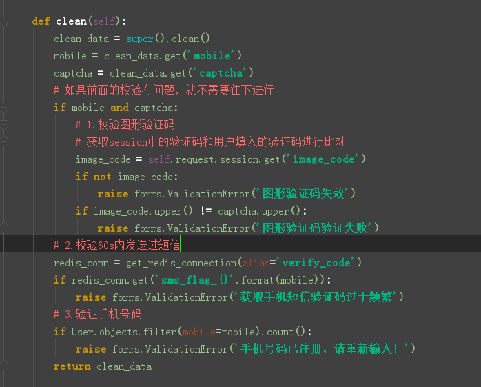

原文出处:本文由博客园博主python、小小白提供。
原文连接:https://www.cnblogs.com/llb1012/p/11341272.html
原文连接:https://www.cnblogs.com/llb1012/p/11341272.html
获取短信验证码功能
1.接口说明
| 类目 | 说明 |
| 请求方法 | post |
| url定义 | /sms_code/ |
| 参数格式 | 表单 |
1.1.参数说明
| 参数名 | 类型 | 是否必须 | 描述 |
| mobile | 字符串 | 是 | 用户输入的电话 |
| captcha | 字符串 | 是 | 用户输入的验证码 |
1.2返回数据格式
{
"errno": "0",
"errmsg": "发送短信验证码成功!",
}
2.后端设计
如图所示，我们使用类视图来写。
如下图所示， 手机号以及验证码我们使用django提供的类视图来校验。

3.前端js代码
5.png)
4.csrf
由于是post表单提交，django默认自带csrf保护，因此我们要在页面中common.js添加如下内容,魔门请求的时候。django默认给我们返回csrftoken，我们需要获取出来，然后添加到ajax请求头中去，下面的js主要就是这个功能
5.总结
短信验证码主要功能就已经结束，js写的不是很规范，以后会补充上来，有什么疑问的随时提问，一定第一时间恢复。下一篇将要讲解用户注册的最后一个功能，提交注册功能。谢谢大家